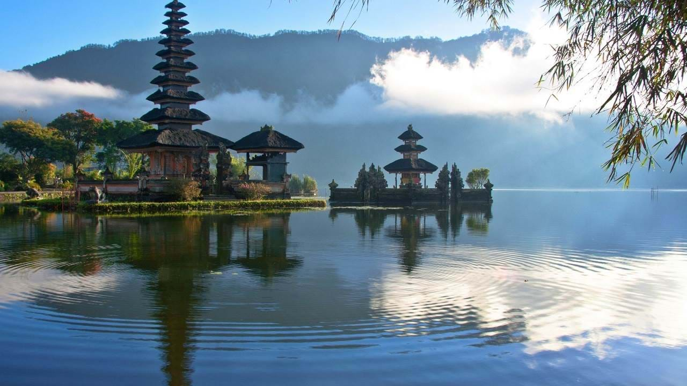
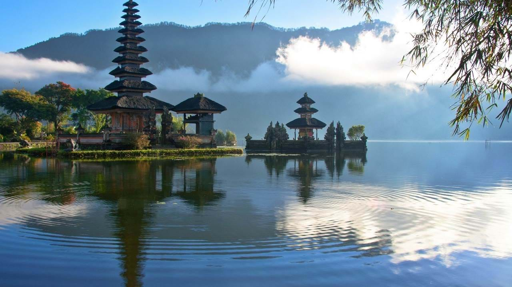

Turismo Independiente
TURISMO INDEPENDIENTE
Avenida Tenor Fleta 74, Local 2
50007 Zaragoza
Teléfono: 976-653-321
info@turismoindependiente.com
Destinos
Bali

Conocida como la Isla de los Dioses, Bali es una isla paradisíaca que tiene mucho que ofrecer a sus visitantes. Verdes arrozales, antiguos templos, inolvidables atardeceres, arte y cultura local, danzas milenarias, atractivos paisajes y los mejores hoteles del mundo son algunos de los atractivos más destacables de la isla.
Lejos de lo que mucha gente piensa, Bali no es un destino que ofrezca playas espectaculares, pero es algo que compensa con una gran dosis de exotismo y belleza salvaje que cautiva a sus visitantes.
Comúnmente elegida como destino para los viajes de novios, Bali es también uno de los lugares preferidos por los amantes del surf y otros deportes acuáticos. En Bali es posible disfrutar de algunos de los hoteles más maravillosos del mundo por un precio asequible. Allí, las habitaciones dejan de tener cuatro paredes para convertirse en impresionantes villas con piscina privada y vistas espectaculares, en las que se pierde la noción del espacio y del tiempo y el mundo deja de existir.

Conocida como la Isla de los Dioses, Bali es una isla paradisíaca que tiene mucho que ofrecer a sus visitantes. Verdes arrozales, antiguos templos, inolvidables atardeceres, arte y cultura local, danzas milenarias, atractivos paisajes y los mejores hoteles del mundo son algunos de los atractivos más destacables de la isla.
Lejos de lo que mucha gente piensa, Bali no es un destino que ofrezca playas espectaculares, pero es algo que compensa con una gran dosis de exotismo y belleza salvaje que cautiva a sus visitantes.
Comúnmente elegida como destino para los viajes de novios, Bali es también uno de los lugares preferidos por los amantes del surf y otros deportes acuáticos. En Bali es posible disfrutar de algunos de los hoteles más maravillosos del mundo por un precio asequible. Allí, las habitaciones dejan de tener cuatro paredes para convertirse en impresionantes villas con piscina privada y vistas espectaculares, en las que se pierde la noción del espacio y del tiempo y el mundo deja de existir.
Destinos Frecuentes
Bali
Conocida como la Isla de los Dioses, Bali es una isla paradisíaca...
Río de Janeiro
La ciudad carioca ofrece un sinfín de posibilidades...
Nueva York
La Gran Manzana es una ciudad sorprendente, con mucho para ver y hacer...
Bali
Conocida como la Isla de los Dioses, Bali es una isla paradisíaca...
Río de Janeiro
La ciudad carioca ofrece un sinfín de posibilidades...
Nueva York
La Gran Manzana es una ciudad sorprendente, con mucho para ver y hacer...